const myCodingJourney = () => {
__for (article in blog) {
____console.log(blog[article]);
__}
};

These are reflections of my experience during the MIT xPRO Coding Bootcamp.
Greetings!
Full Stack Coding Bootcamp Week 14, our 'BadBank' project is coming due. Starter files were supplied, but they utilized CDNs and were in React 17. As such, I chose to build my project from scratch using 'npx create-react-app' and React 18.
Project requirements: styled navbar and homepage, account creation, deposits and withdrawals, user data, and input validation. See video below for a walkthrough, or my GitHub Readme for details and customizations.
I wanted to integrated a currency exchange theme but with an MIT xPRO twist. Thus, the MIT xCHANGE was born! Currency exchange rates are fetched from CoinGecko, then rendered into horizontally scrolling span elements.
I used 'getBoundingClientRect' to get control of the DOM area. Then I used 'scrollWidth', 'scrollLeft', and 'scrollTo' to implement movement of the scrollbar. Check out the deployed demo on my Projects page and let me know what you think!
Check out the MIT xCHANGE on mobile!

Happy coding!
- Pete, May 13, 2022
Student @ MIT xPRO
Greetings!
This Full Stack Coding Bootacmp assignment was a To-Do List React App. The base functionality included adding and removing tasks.
Some customizations were added to transform this into a To-Do Dashboard. See this video, or the details below for a summary.
The base version only required the ability to add and remove tasks. The customized version retains the tasks in local storage and will persist in memory through a reload.
To make this React App a little more useful, the day of the week, date, and time is conveniently displayed.
The user can enter a 5-digit zip code to see their local temperature, which is fetched from a weather API. This feature also includes entry validation and error handling.
Please see the Projects section of my portfolio to check out the deployed demo, and let me know what you think.
The user can enter a 5-digit zip code to see their local temperature, which is fetched from a weather API. This feature also includes entry validation and error handling.
Please see the Projects section of my portfolio to check out the deployed demo, and let me know what you think.
Happy coding!
- Pete, Apr 23, 2022
Student @ MIT xPRO
Greetings!
After figuring out how to move the array of map markers using a loop, I decided to further build upon the project.
Custom features include: map controls, light/dark mode toggle button, refresh timer, and a last updated time.
The map markers are also assigned a random color, which is color-coded with a 'bus id' list. The 'bus id' list will show once the application is running.
Please see the Projects section of my portfolio to check out the deployed demo, and let me know what you think.
The map markers are also assigned a random color, which is color-coded with a 'bus id' list. The 'bus id' list will show once the application is running.
Please see the Projects section of my portfolio to check out the deployed demo, and let me know what you think.
Happy coding!
- Pete, Mar 22, 2022
Student @ MIT xPRO
Greetings!
Week 5 of MIT xPRO Full Stack Coding Bootcamp (full-time cohort), we were assigned two projects that would be graded towards our Professional Certificate.
PacMan Factory Basic Requirements: Create PacMen with 2D movement, images should alternate to simulate 'chomping' and horizontal direction change.
Eye Movement Basic Requirements: Use 'onmousemove' event and array methods to simulate an 'pair of eyes' tracking the mouse cursor.
Customized Aqua-PacMan to be contained within an animated aquarium. The move button has been upgraded to a color-coded toggle button. You can also ZAP! a PacMan if you made too many!
Customized an Animated Head to 'blink' and 'talk' with mouse clicks or mobile touch inputs. Mr. Animated Head is also very passionate about his bootcamp experience!
Both projects are fully responsive and mobile compatible. Please check out the demos or view the GitHub Repositories from my Projects page.
Happy coding!
- Pete, Mar 15, 2022
Student @ MIT xPRO
Greetings!
Image 1
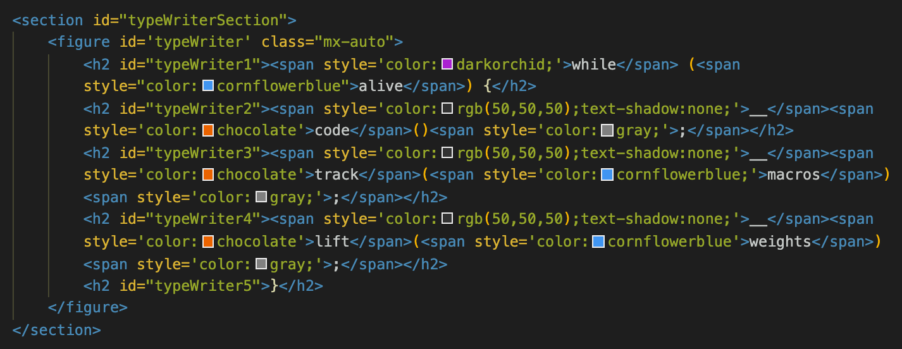I wanted to simulate typing multiple lines of code, I needed a way to control and delay each row individually. I chose to assign 'id' tags that I later call upon in the CSS. I chose to use 'span' tags to manuipate colors directly in the HTML. Note that I used underscores that color-matched the background to simulate a tab.
Images 2 & 3 show the CSS properties for the 'typewriter,' the 'section' and the 'h2' font.
Image 4 shows the properties for the pseudo-elements ':before' and ':after.' Image 5 shows using the 'write' and 'blink' animations for the aforementioned pseudo-elements. Note that the 'steps' matched the character length of the row.
Image 4
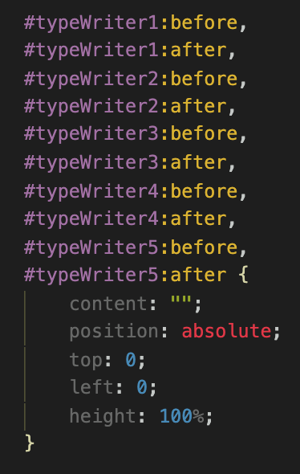Image 4 shows the properties for the pseudo-elements ':before' and ':after.' Image 5 shows using the 'write' and 'blink' animations for the aforementioned pseudo-elements. Note that the 'steps' matched the character length of the row.
Image 6 shows the 'write' and 'blink' animations. Note that my color choices were for a darker background.
Image 7 shows the CSS properties and animation properties of the subsequent 'typewriter' rows. Note that the timing and steps needed to be adjusted for each row.
Happy coding!
- Pete, Mar 5, 2022
Student @ MIT xPRO
Hello Again!
I decided to add some additional features: user controls, image support for vertical movement, and integration of the previous 'Magic Ball Challenge' to give PacMan something to do. Check out the images and write-up below for more details.
Image 1
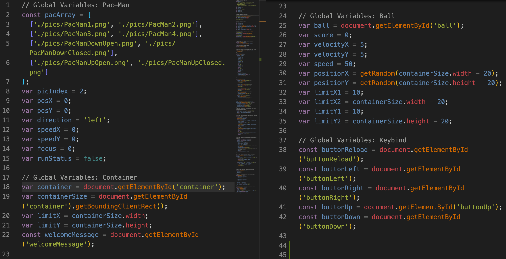Image 1 shows all the Global Variables. Additional PacMan images were created for vertical movement and then included in the 'pacArray' variable.
I used the getElementById method to assign aspects of the HTML that would later be manipulated by JavaScript.
Global variables were also assigned for PacMan and the Ball to enable movement and collision detection.
Image 2
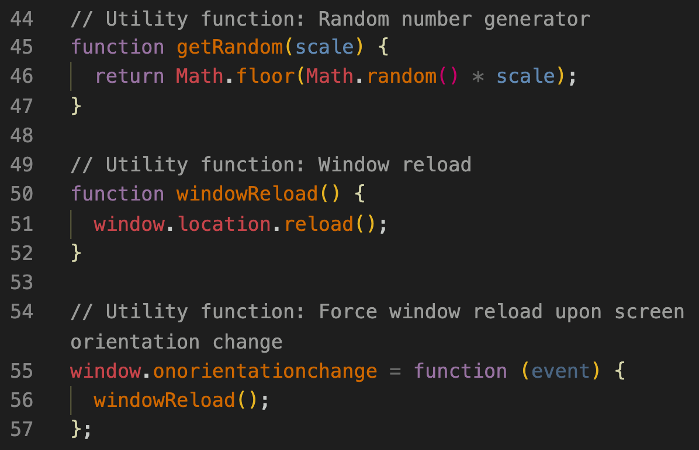Image 2 shows a couple 'utility' functions. Random numbers are always useful, and the onorientationchange method reloads screen to update boundaries upon screen orientation change.
Image 3
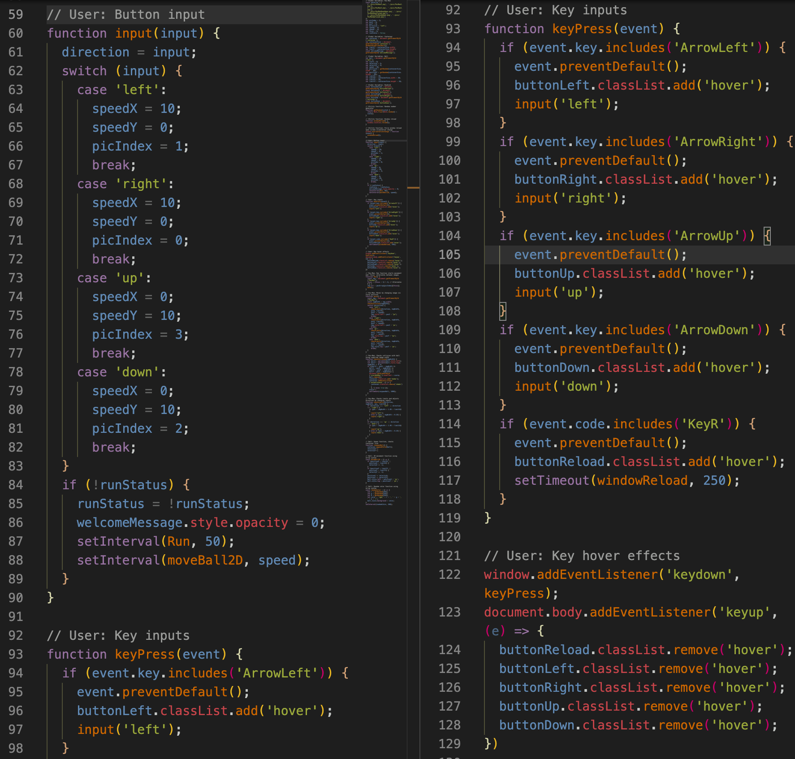Image 3 shows the functions for User Input. I used Event Listeners and the Keyboard Event sequence to manage the keyboard inputs and responses.
Image 4
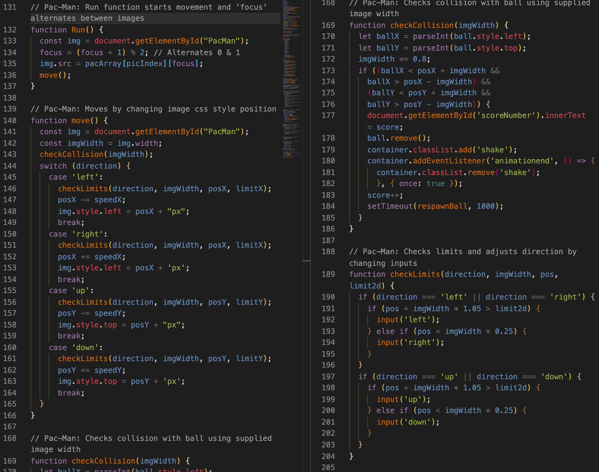Image 4 shows the functions for the PacMan element. The Run function manages which image is shown then calls the Move function, which changes PacMan's position on the screen. The checkCollison and checkLimits functions check for PacMan contacting a boundary or the ball.
Image 5
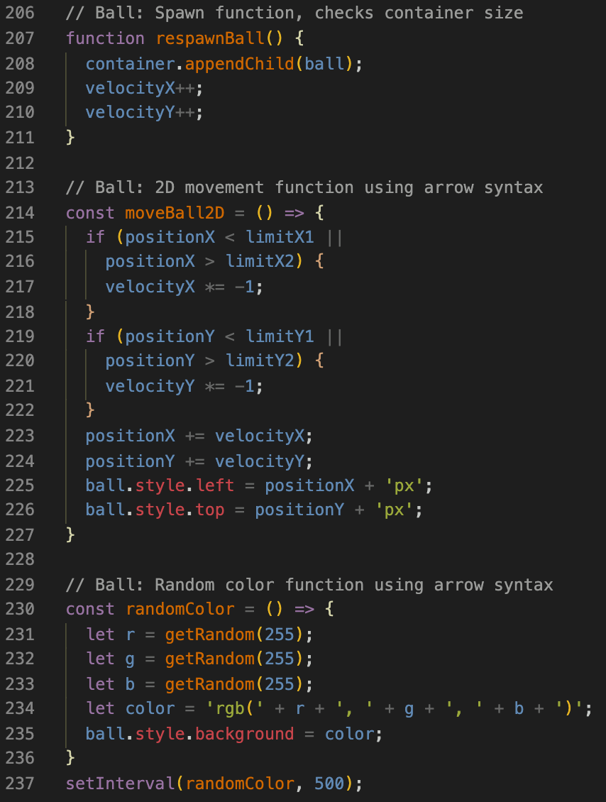Image 5 shows the functions for the Ball element. Refer to my Magic Ball Challenge blog post for more details.
- Pete, Feb 27, 2022
Student @ MIT xPRO
Hello!
This is my second blog post & discussion assignment from the MIT xPRO Full Stack Coding Bootcamp. In this Magic Ball challenge, we used HTML, CSS, and JavaScript to create a ball image and make it move.I decided to have some fun with and added some extra features. Please see the video and write-up below for more details, and some links that I found to be helpful.
Image 1
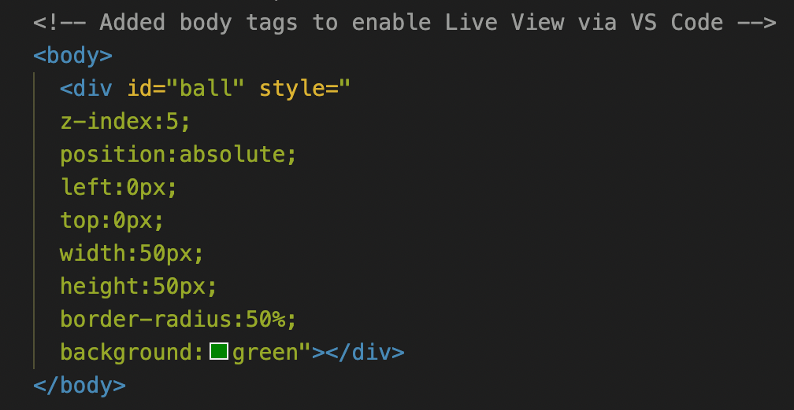Image 1 shows the HTML 'div' for the ball and its style attributes. This was provided by the MIT xPRO Bootcamp. I added the 'body' tags since I was using Visual Studio Code and the editor indicated that I needed to add those in order to use the Live Server Extension (updates the HTML page when I save).
Image 2
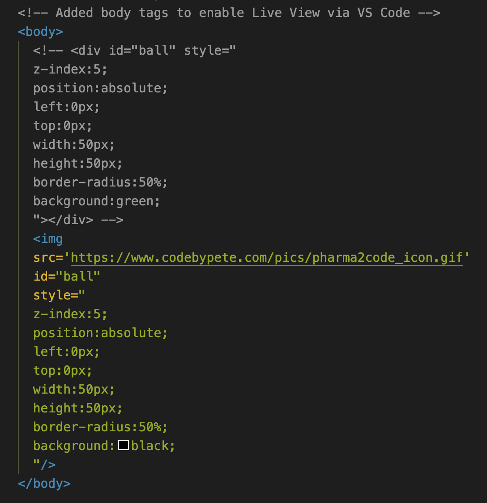In Image 2, I decided to personalize this challenge by adding my logo to the ball. I did this by using an HTML 'img' tag instead of the 'div' tags. Note that the 'img' tag does not have a separate closing tag. I then added the 'src' link and kept the 'id' and 'style' attributes the same.
Image 3
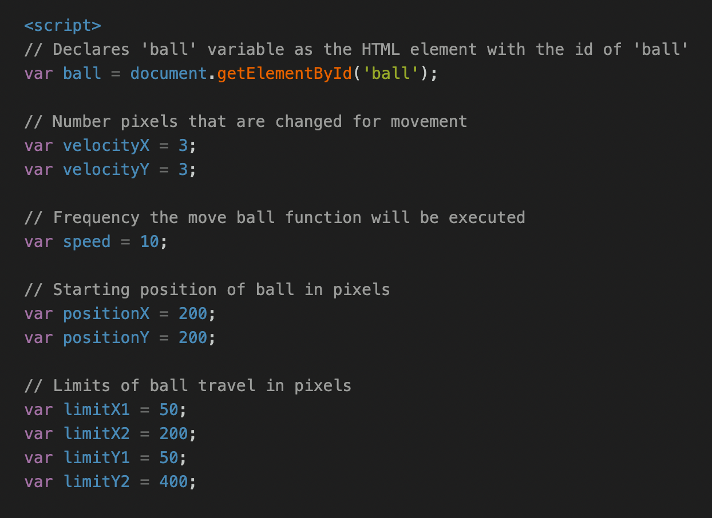Image 3 shows the opening 'script' tag, which denotes the beginning of the JavaScript code in this file. All the global variables for 2D ball movement are listed, including the 'ball' variable that is assigned to the HTML document element with the ID tag of 'ball'.
Image 4
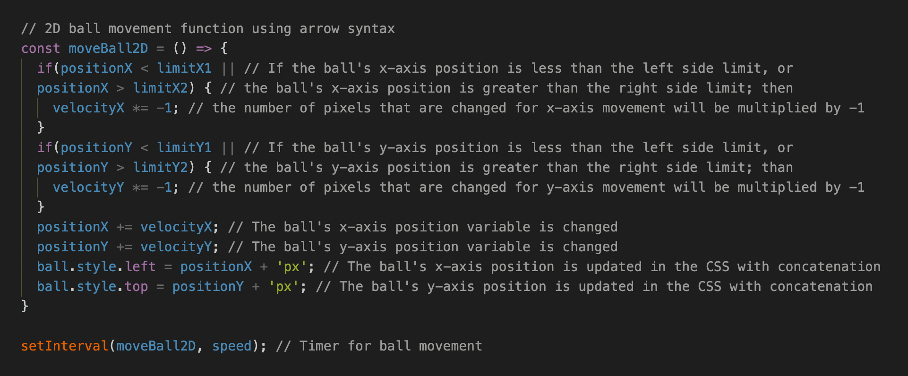Image 4 shows the 2D ball movement function using JavaScript arrow syntax. Conditional statements detect if the ball reaches x-axis or y-axis limits. If a limit is reached, the corresponding 'velocity' variable is multiplied by -1 to reverse directions.
If no limits are reached, the 'position' is updated by adding the 'velocity' variable. The CSS is then updated by assigning the 'left' and 'top' styles to the x-axis and y-axis 'position', respectively. Note that the 'px' suffix is added via 'addition operator concatenation'.
Finally, the 'setInterval' method is used to call the 'moveBall2D' function based on the frequency established in the 'speed' variable.
Image 5
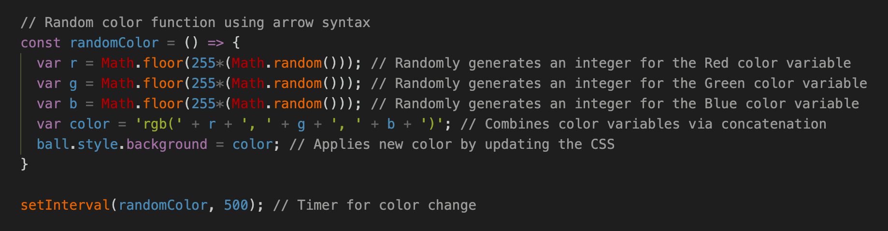Image 5 shows the random color function, which uses the 'Math.floor' and 'Math.random' JavaScript methods to randomly generate an integer for each of the RGB colors. Note that the RGB variables are assigned within the scope of this function as opposed to the other 'global' variables. Each RGB color variable is then concatentated and assigned to the variable 'color'.
Image 6
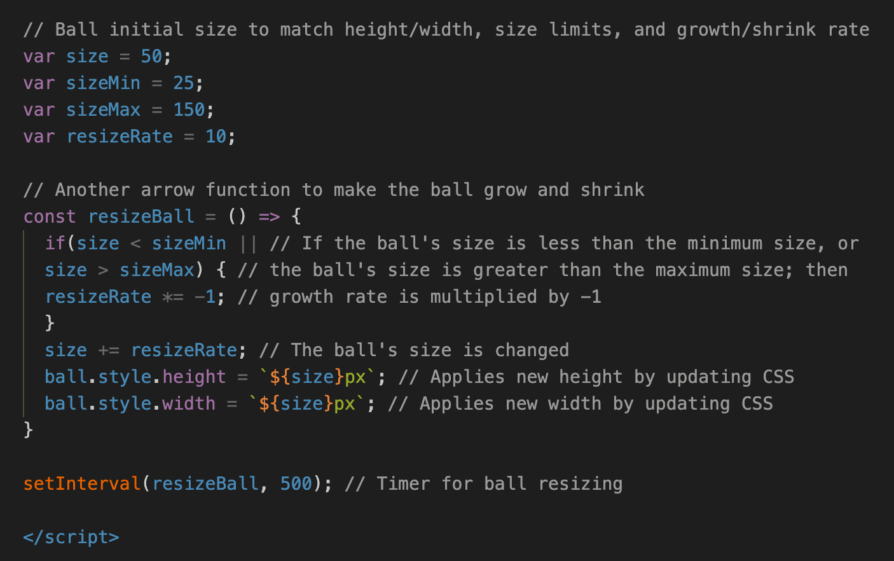Image 6 starts off with some new global variables so that the ball can be resized along its journey. This includes a starting size (set to match the original 'ball' height & width), min and max limits, and a rate of change.
Next is an arrow function that includes a condition statements to detect size limits. If any limits are reached, the 'resizeRate' variable is mulitplied by -1 to change from growing to shrinking and vice versa. The new size is then assigned the the CSS style height and width, respectively. Note that I chose to use template literals here instead of concatentation.
Please let me know with any suggestions, or comments. Thank you again for visiting, and happy coding!
- Pete, Feb 20, 2022
Student @ MIT xPRO
Hello World!
Pun intended. 😄
My name is Pete and this is my first blog post. I am enrolled in a Full Stack coding bootcamp and one of our first assignments is to develop a set of instructions for creating a personal GitHub page.
As I prepared for this bootcamp, I used some free online resources like The Odin Project and freeCodeCamp.org. Thank you both for making this coding knowledge so easily accessible!
- Set up Git: I did this on Mac and used Homebrew. The full lesson can be found here: The Odin Project.
- Set up a Git Repository: I did this for the first time using the terminal command line. It reminded me of using MS DOS when I was younger. As I continued to make Git Repositories, I transitioned to using the GitHub Desktop App, as well as the Visual Studio Code Extension. The full lesson can be found here: The Odin Project.
- Create index.html: This should include the content of your website. You may want to include some optional CSS for aesthetics. Check out the Responsive Web Design course at freeCodeCamp.org.
- Push to GitHub: Similar to setting up a Git Repository, I starting off using the terminal 'git add' and 'git commit' commands my first several weeks, but later used VS Code and the GitHub Desktop App.
- Publish Repository: In order to view my project on the web or show it to others, I had to publish my repository. I did this using the GitHub Website and navigating to Settings > Pages and changing the Source from none to main branch. The full lesson can be found here: The Odin Project.
- Use a Custom Domain (Optional): GitHub has some pretty detailed documentation that describes how to set up a custom domain, specifically with adding the DNS IP addresses. Check out this GitHub Documentation Link.
Please let me know with any suggestions, or comments. Thank you again for visiting my site, and happy coding!
- Pete, Feb 16, 2022
Student @ MIT xPRO
Hello!
My name is Pete Chu and I have been a professional in the Pharmaceutical industry for the past 20 years. My technical specialities include Facility Start-up, Equipment and System Validation, as well as Quality Engineering.
I have a bachelor's degree in Biological Sciences from the University of Delaware. My experience includes Validation Consulting with Integrated Project Services (IPS), as well as direct employment with Janssen (formerly Centocor, Johnson & Johnson), and Eisai, Inc. (formerly Morphotek).
With Janssen and Eisai, I was responsible for leading equipment and system qualification efforts as a Senior Validation Engineer. In 2012, I transitioned to a Senior Quality Engineer role within Eisai and was responsible for site metrics, quality dispositions, change controls, and leading investigations. In 2017, I was managing the GMP Document Control and Quality Engineering teams.
In December of 2021, I stumbled upon freeCodeCamp.org and rediscovered my childhood passion of coding and technology. I am currently at the midpoint of my career and have decided to part ways with Eisai in order to pursue a career change that is in line with a personal passion.
I look forward to working with you on this exciting part of my journey!
Best Regards,
Pete Chu,
9 Feb, 2022
Student @ MIT xPRO